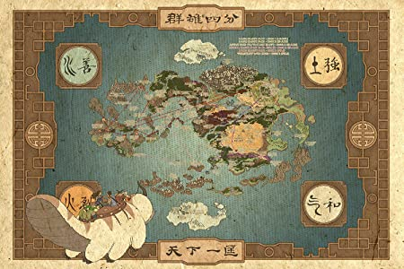
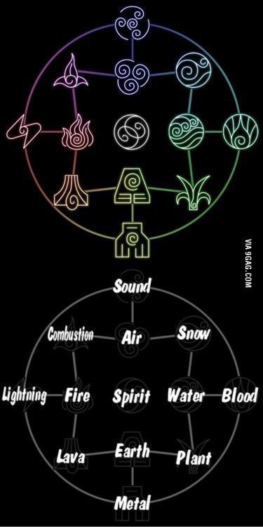
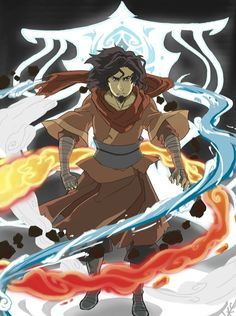

Aqui encontraras informacion sobre el universo de avatar basados en la serie: Avatar la leyenda de Aang, la leyenda de korra y los comics y novelas que la complementan
¿Que es?
El universo de avatar es un mundo parecido al de nosotros pero con unas pequeñas diferencias, la principal de ellas es que algunas personas tienen la capacidad de controlar un elemnto a excepcion del avatar, que es capaz de controlar los 4 elementos posibles que serian, el fuego, el agua, la tierra y el aire, esta habilidad esta otorgada por uno espiritu, aunque no es el unico espiritu que existe en el universo de avatar(ver imagen -1)

imagen -1 mapa de avatar
Los elementos
Como ya mecionamos desde hace mucho tiempo existieron los maestros los cuales obtenian sus poderes gracias a los leones tortuga, ellos les otorgaban a los humanos el poder de un elemento en especifico y ellos al terminar su tarea lo regresaban, hasta que un dia decideron dejar de regresar los poderes a los leones tortuga y con ello los hijos de los meastros heredarian los poderes del padre, haci hasta el dia de hoy. Los maestros aparte de ser capaces de controlar el elemnto base que poseen pueden perfeccionar sus habilidades y con ello adquirir nuevas habilidades, a este tipo de habilidades les llamamos subelementos (vea imagen 0)

imagen 0 sub artes avatar
El avatar
El avatar es un mitad persona, mitad espiritu el cual a lo largo de los tiempos su mision es mantener el equilibrio en el mundo, el avatar es capaz de controlar los 4 elementos y gracias a ello le permite desarrollar nuevas habilidades a partir del control de los 4 elementos. El poder del avatar pasa de generacion en generacion al momento de la muerte de su portador. El inico del avatar se remonta al avatar Wan(Ver imagen 1), el primer avatar, Wan queria un mundo equilibrado y por accidente libero al espiritu Vaatu de Raava el cual se encargaria de traer el mal al mundo, Wan se fusiono con Raava para poder detener a Vaatu, con Wan y Raava fusionados, wan es capaz de obtener el poder de los 4 elementos gracias a los leones tortuga, con ello Wan y Raava se enfretaron a Vaatu y lo encerraron para siempre en el arbol del tiempo aunque no fue suficioente ya que Vaatu seguia influenciado a los humanos y a los espiritus

imagen 1 avatar wan
Los espiritus
En el universo de avatar existe un tipo de mundo paralelo que es el mundo de los espiritus, estos aveces se pueden manifestar en el mundo de los humanos y los humanos en el de los espiritus, en este mundo viven Raava y Vaatu (ver imagen 34)que los podriamos considerar los espiritus mas importantes, Raava simboliza el bien y Vaatu simboliza el mal, ellos estan en constante lucha y cada 10000 años ellos pelean y se decide quien tendra mayor relevancia durante los proximos 10000 años mientras el perdedor crece dentro del ganador recobrando sus fuerzas